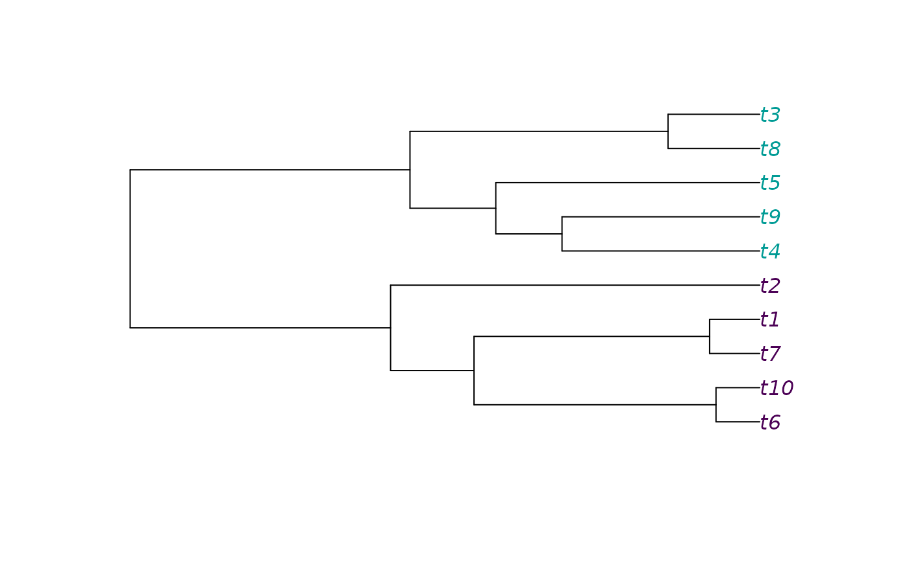
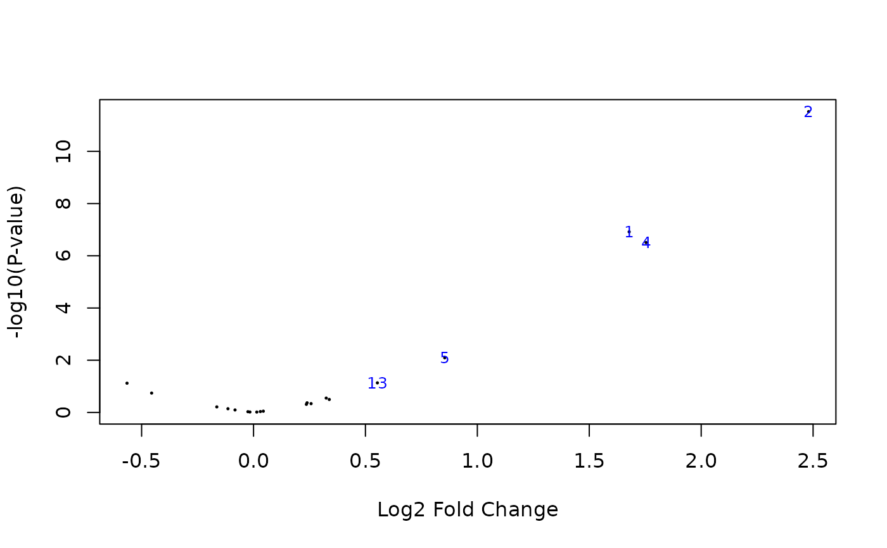

Phylogenetic Linear Model for Gene Expression Analysis
phylolmFit.RdFit a phylogenetic linear model using phylolm for
each gene given a matrix of normalized expression data.
This function inherits its interface from the limma function lmFit.
Usage
phylolmFit(
object,
design = NULL,
phy,
col_species = NULL,
model = c("OUfixedRoot", "BM", "lambda"),
measurement_error = TRUE,
use_consensus = TRUE,
consensus_tree = NULL,
REML = TRUE,
ncores = 1,
...
)Arguments
- object
a matrix data object containing normalized expression values, with rows corresponding to genes and columns to samples (species).
- design
the design matrix of the experiment, with rows corresponding to samples and columns to coefficients to be estimated. Defaults to the unit vector (intercept).
- phy
an object of class
phylo, representing the phylogenetic relationships between the species. It must be dated and ultrametric. If the column names ofobjectfollow the patternSpeciesName_SampleIdorSpeciesName.SampleId, an automatic matching of the samples on the tip of the tree is performed. Otherwise, the tree tip labels must match with species names incol_species(see below). The tip labels of the tree can also match exactly the names as the columns ofobject, so that the tree directly includes all the replicates.- col_species
a character vector with same length as there are columns in the expression matrix, specifying the species for the corresponding column. If left
NULL(the default), an automatic parsing of species names with sample ids is attempted.- model
the phylogenetic model used to correct for the phylogeny. Must be one of "OUfixedRoot" (the default), "BM", or "lambda". See
phylolmfor more details.- measurement_error
a logical value indicating whether there is measurement error, or individual independent (non phylogenetic) variation among samples. Default to
TRUE. Setting this toFALSEcan give unexpected results, except for the "lambda" model. Seephylolmfor more details.- use_consensus
If
TRUE(the default), one unique consensus tree is used to represent the correlation structure, using a trimmed mean of the transformed parameters. SeephylogeneticCorrelationsfor more details, andlimmafunctionduplicateCorrelation. IfFALSE, each gene will use its own model parameters and will have its own correlation structure accordingly.- consensus_tree
If not
NULL, the consensus tree containing the correlation structure, result of functionphylogeneticCorrelations. If provided, argumentsphy,modelandmeasurement_errorwill be ignored.- REML
Use REML (default) or ML for estimating the parameters.
- ncores
number of cores to use for parallel computation. Default to 1 (no parallel computation).
- ...
Value
An object of class PhyloMArrayLM-class,
with list components coefficients, stdev.unscaled,
sigma and df.residual.
These quantities take the phylogenetic model into account.
The object inherits from the limma class
MArrayLM-class, and can be passed to eBayes.
Details
This function performs the fit in several steps:
Fit a phylogenetic linear model with
phylolmon each gene.If
use_consensus = TRUE, use the trimmed mean of transformed parameters to get one regularized value for all the genes. This step usesphylogeneticCorrelations, and is similar toduplicateCorrelation. For more details on the specific parameters used in the regularization, see functiongetParameters.Compute the estimated phylogenetic correlation matrix \(\hat{C}_g\) for each gene (it is the same for all genes if
use_consensus = TRUE).De-correlate the normalized data by left-multiplying it by \(\hat{C}^{-1/2}_g\) the inverse Cholesky decomposition of the correlation matrix.
Use
lmFiton the de-correlated data.
In particular, this procedure ensures that the fitted
coefficients, stdev.unscaled,
sigma and df.residual do take the phylogeny into account,
and can be used directly in downstream processing such as eBayes.
The default bounds on the phylogenetic parameters are the same as in
phylolm, except for the alpha parameter of the OU,
that use ad-hoc bounds from function getBoundsSelectionStrength,
and the sigma2_error of the intra-specific variance,
that takes it lower bound from function getMinError.
Examples
## Simulate a tree with tip conditions
set.seed(1289)
ntips <- 10
tree <- ape::rphylo(ntips, 0.1, 0)
condition <- c(0, 0, 1, 1, 1, 0, 0, 1, 1, 0)
plot(tree, tip.color = hcl.colors(3)[condition + 1])

## Simulate data with 1 to 3 samples per species
reps <- sample(1:3, ntips, replace = TRUE)
rep_ids <- make.unique(rep(tree$tip.label, times = reps), sep = "_")
ngenes <- 20
dat <- matrix(rnorm(sum(reps) * ngenes, 1, 0.5), nrow = ngenes)
rownames(dat) <- paste0("g", 1:ngenes)
colnames(dat) <- rep_ids
## Add differentially expressed genes
condition_reps <- rep(condition, times = reps)
ndiff <- 5
dat[1:ndiff, ] <- dat[1:ndiff, ] + rexp(ndiff, 1/2) %*% t(condition_reps)
## Design matrix
design <- cbind(rep(1, ncol(dat)), condition_reps)
colnames(design) <- c("(Intercept)", "condition")
rownames(design) <- rep_ids
## linear model fit
pfit <- phylolmFit(dat, design = design, phy = tree)
#> Loading required package: ape
pfit
#> PhyloMArrayLM
#> Fit on: 20 genes.
#> Model: OUfixedRoot, with measurement error.
#> Using a consensus tree.
## eBayes correction
pfit <- limma::eBayes(pfit, trend = TRUE)
limma::topTable(pfit, coef = 2)
#> logFC AveExpr t P.Value adj.P.Val B
#> g2 2.4801330 1.8127645 7.9985315 3.016969e-12 6.033938e-11 17.423416
#> g1 1.6783282 1.3716897 5.7235899 1.209830e-07 1.209830e-06 7.039861
#> g4 1.7538081 1.4047876 5.5060408 3.110442e-07 2.073628e-06 6.121750
#> g5 0.8542889 1.0296559 2.7063159 8.064976e-03 4.032488e-02 -3.525871
#> g13 0.5534069 0.7824108 1.8099043 7.346971e-02 2.522354e-01 -5.448973
#> g15 -0.5651961 0.8212475 -1.7959996 7.567061e-02 2.522354e-01 -5.473288
#> g17 -0.4552155 0.8176752 -1.3476872 1.809613e-01 5.170324e-01 -6.161894
#> g3 0.3247762 1.1046741 1.0831302 2.814896e-01 7.037241e-01 -6.479465
#> g8 0.3384772 0.7251398 1.0044543 3.177090e-01 7.060201e-01 -6.560914
#> g6 0.2393203 0.7514823 0.7978168 4.269648e-01 8.121245e-01 -6.746119
## Volcano plot
limma::volcanoplot(pfit, coef = 2, highlight = ndiff)
